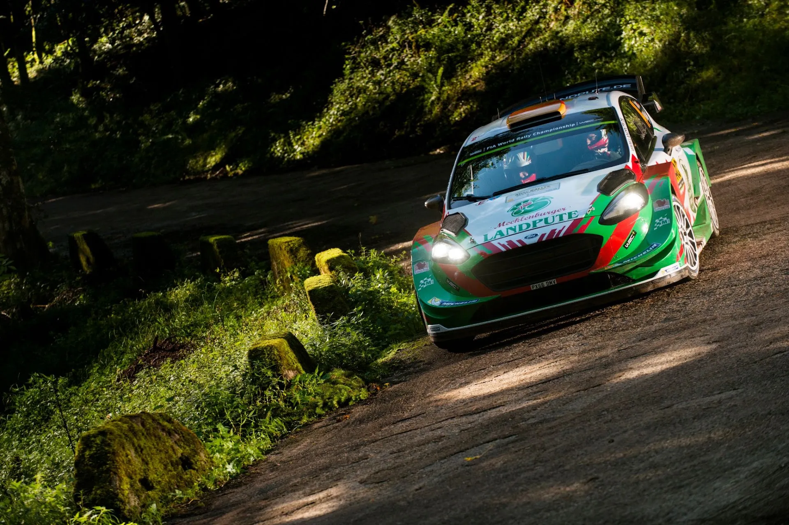
Powerslide Stats Centre: The Story of the 2017 WRC Season
Header: Zenor Designs
The 2017 WRC Season was the start of a new era for the sport. The somewhat lackluster WRC 1.6-liter era received a significant boost of excitement, with the introduction of a new set of regulations, which brought cars that were faster and more exciting than anything we had seen in the past 40 or so years. A bigger turbo restrictor brought the cars' horsepower to 380 from the 300 or so of 2016, with the new WRC cars also receiving an aerodynamic makeover, which boosted their corner speed and stability.
Volkswagen withdrew from the sport in late 2016 due to the Dieselgate scandal, but there would still be 4 teams competing in the top class, as Toyota would join the WRC after a 17-year absence. Across 13 rallies, we saw 11 different drivers score a podium finish, 7 of them finishing on the top step of the podium, from all manufacturers. To honour this season, I decided to take a deep dive into all those rallies and stages, and see which drivers were the fastest, which ones were the most reliable, and how every one of the new cars performed in 2017.
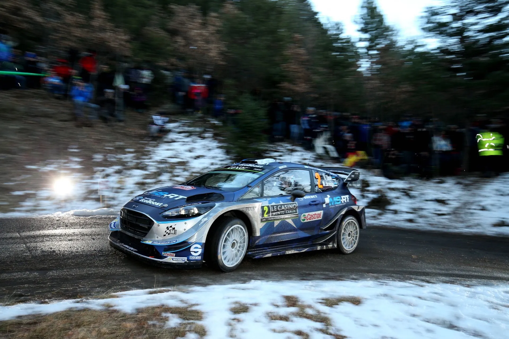
@World / Red Bull Content Pool
Before we dive in, let's break down how these numbers are determined! There are two key variables: Deficit to Ideal Time (measured in seconds per kilometer) and Percentage of Stages Completed with a Representative Time (expressed as a percentage). The first variable, Deficit to Ideal Time, reflects a driver's speed. It is calculated by comparing the driver's performance to the ideal pace, where the ideal pace is defined as a driver who won all the stages. Essentially, this shows how fast or slow a driver was throughout the season. The second variable, Percentage of Stages Completed with a Representative Time, relates to a driver's reliability. This percentage is based on the number of kilometers a driver completed with a competitive time relative to the total season mileage. A non-representative time might occur when a driver faces issues like mechanical problems, punctures, wrong tire choices, or is simply cruising.
To determine if a time is non-representative, it is compared to times from either the previous run of the stage or times from the same loop. If the time has a deficit of more than 160% of the previous pass or loop average, it is classified as non-representative. When comparing drivers, mechanical DNFs are ignored, but since in this comparison we are talking about the best combination of driver and team, retirements matter and will be counted. Every driver who drove a WRC car competitively throughout 2017 will be looked at for this post. Sorry to all Jourdan and Khalid Al-Qassimi fans.
As ever, the season kicked off in Monte-Carlo. Thierry Neuville left everyone in a bit of a shock, leading the rally by almost a minute on Saturday, ahead of Sebastien Ogier. The Frenchman had joined M-Sport after VW's withdrawal, and had an uncharacteristic error, getting stuck in a ditch on Friday's first test. Unfortunately for Neuville, he would break the suspension of his i20 WRC on a seemingly innocuous cut on the second pass of Bayons-Breziers, and would lose 33 minutes in the process.
Ogier took the lead, ahead of teammate Ott Tanak, who had joined the main team for 2017. Engine issues on Sunday would see the Estonian give up 2nd to Jari-Matti Latvala, which was a great result for Toyota on their return. Their Yaris WRC wasn't the fastest, but they were able to get a dream result.
As for Citroen, their Monte was a bit of a nightmare. Rumoured to be the team with the fastest car in the off-season, the French marque saw Stephane Lefebvre go off the road on SS2, and Kris Meeke go off, and then have an accident on the road section after Super Rallying. Funnily enough, Craig Breen in the DS3 would be the team's highest finisher, in 5th.
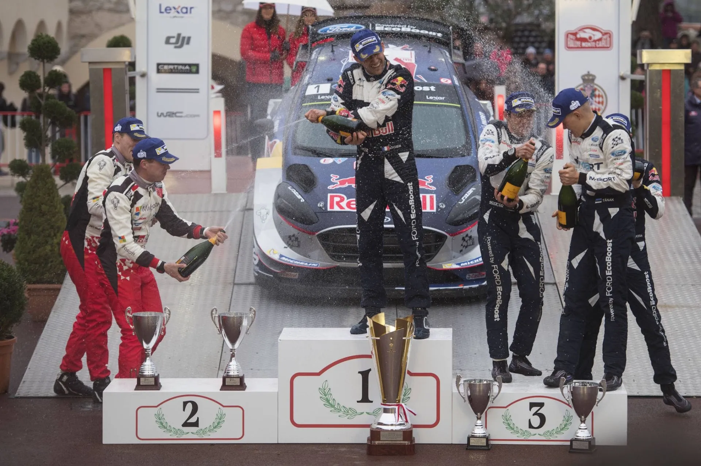
@World / Red Bull Content Pool
Sweden was a deja vu for Neuville and Hyundai. The Belgian had a commanding lead at the end of Saturday, 43 seconds ahead of Jari-Matti Latvala, with just the Karlstad SSS to run. In there, Neuville would hit a block of tyres, which would send him straight onto some concrete, ripping a wheel off his i20. Neuville was the fastest man in both of the opening rallies, but left both with just the points he scored on the Power Stage.
Jari-Matti Latvala would go one better than he did in Monte Carlo and win in Sweden, Toyota's first win since Rally China in 1999. Tanak and Ogier would complete the podium, a credible result for the Frenchman from first on the road.
Meeke's season continued to be lackluster, going into a snowbank on SS13 from 5th. He would finish in 12th. Breen would again be Citroen's top scorer in 5th. Hayden Paddon would start off slow, but would be back up to speed on Friday afternoon, only to have all his momentum ruined by having to drive with no Power steering on Saturday's first loop.
Mexico would be next, and it would be a reality check for Toyota. Latvala and Hanninen would finish in 6th and 7th, plagued by issues with the Yaris in the hot conditions. High water temperature would force both drivers to finish SS3 in road mode, with Hanninen falling ill in the process, hurting his performance.
Neuville would not throw away a win in Mexico. Engine issues on Friday would see the Belgian having to settle for 3rd, his first podium of the year. In fact, all three Hyundais would suffer with mechanical issues on the SSSs of Friday, with Sordo and Paddon finishing 8th and 5th.
Elsewhere, Kris Meeke would get both his and Citroen's first win of 2017, despite a famous late scare, having to maneuver his way across a spectator parking area on the last stage. Sebastien Ogier would finish 2nd, being the only driver to finish on the podium in all of the first 3 events.
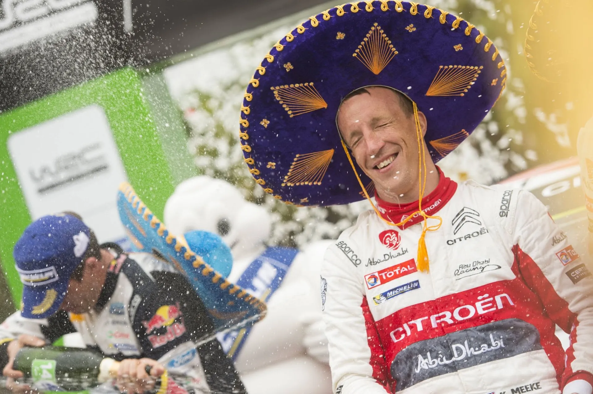
Jaanus Ree / Red Bull Content Pool
The WRC would return to Europe for round 4, visiting the island of Corsica. The first tarmac round of the season saw Citroen field three cars for the first time in 2017. However, only Craig Breen would finish in the top 10, with the Irishman finishing in 5th, again. Stephane Lefebvre would continue to be anonymous, hitting a wall on SS5 and retiring. Kris Meeke was the rally leader, ahead of Ogier and Neuville, but would suffer a blown engine, which put him out of the event.
Neuville would claim the honours, getting his first win of the season, ahead of Ogier and teammate Dani Sordo. Ogier would lose hydraulic pressure and have electrical issues on Saturday and Sunday, but he'd still finish in 2nd. Latvala would finish 4th, with Hanninen going off the road twice and retiring.
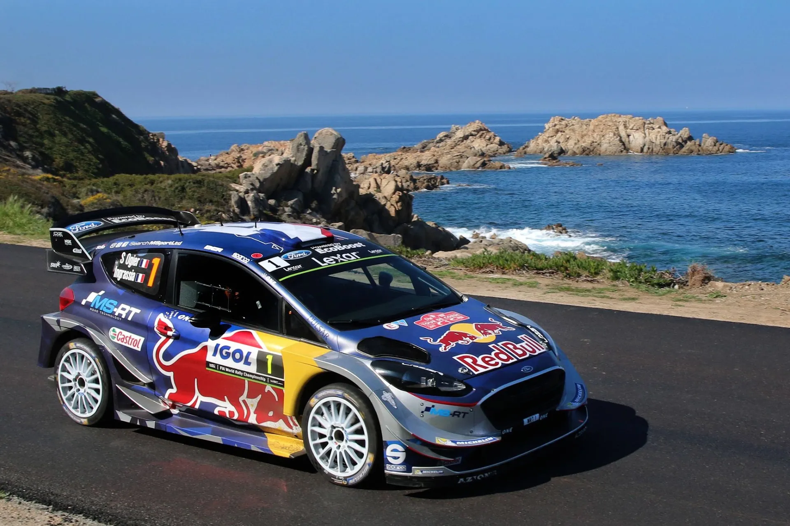
@World / Red Bull Content Pool
Argentina would be next and would provide one of the best showdowns of the season. Elfyn Evans was having a quiet season in the third M-Sport Fiesta, running DMACK tyres to his teammates' Michelins.
The DMACK tyres worked wonders in the South American rally, and Evans found himself in the lead at the end of Friday, almost a minute ahead of Mads Ostberg in the fourth Fiesta. The Welshman would suffer a puncture on Saturday, and then spun, which brought his lead to just 9 seconds heading to Sunday.
Neuville, who was in 2nd, would edge out Evans in both stages, with the pair separated by just 0.6s, heading to the Power Stage in El Condor. In there, Evans would lose out on a maiden win by the slimmest of margins, just 0.7s, in one of the closest finishes in WRC history. This was Neuville's second win of the season.
Further back, no Citroen would finish in the top 10, with Kris Meeke rolling once on Friday, and then having a car-wrecking roll on Saturday. Breen would retire on SS4 after suffering a broken gearbox. Both Toyotas would again suffer from engine overheating, with Hanninen's problem appearing in all three days. Ostberg was running as high as 2nd in the privateer Fiesta, but would break his suspension on SS14 and finish in 9th.
Portugal was next, and it would see Toyota run three cars for the first time in 2017. Esapekka Lappi would get to make his debut in a top-class car. It was the biggest entry list of the season thus far, with 13 top-class WRC cars.
Sebastien Ogier returned to winning ways in Portugal, beating out Thierry Neuville for his second win of the season, the first since Monte-Carlo. Ott Tanak was, however, the fastest man for the best part of Rally Portugal, losing the lead to his teammate after damaging his suspension in Amarante.
Elsewhere, Meeke's dreadful season continued, breaking his suspension on SS7. The Northern Irishman was leading the rally after SS5. Lefebvre would also have another bad event, rolling on Friday and limping home in 13th. Breen was again 5th, despite a poor Sunday.
Citroen would drop Lefebvre from their three-car lineup for Sardinia, employing the services of Andreas Mikkelsen for the rally instead. Mikkelsen would be well off the pace in his first rally in the top class since his win in Australia at the end of 2016, finishing with a 1.38s/km deficit.
He would at least finish, something which Meeke didn't. He rolled and damaged his rollcage from the lead on SS5. Breen would also retire due to a gearbox failure, the second time this season.
Championship leader Sebastien Ogier would struggle from first on the road, finishing 5th, behind his rival Thierry Neuville. Toyota would have a decent rally from all three drivers, with Latvala finishing in 2nd place, and Esapekka Lappi finishing 4th, nabbing a maiden stage win in the process! Hanninen would finish in 6th, his best finish of the season thus far.
The winner, though, would be Ott Tanak, a long-overdue maiden win, which brought the Estonian ahead of Latvala in the standings.
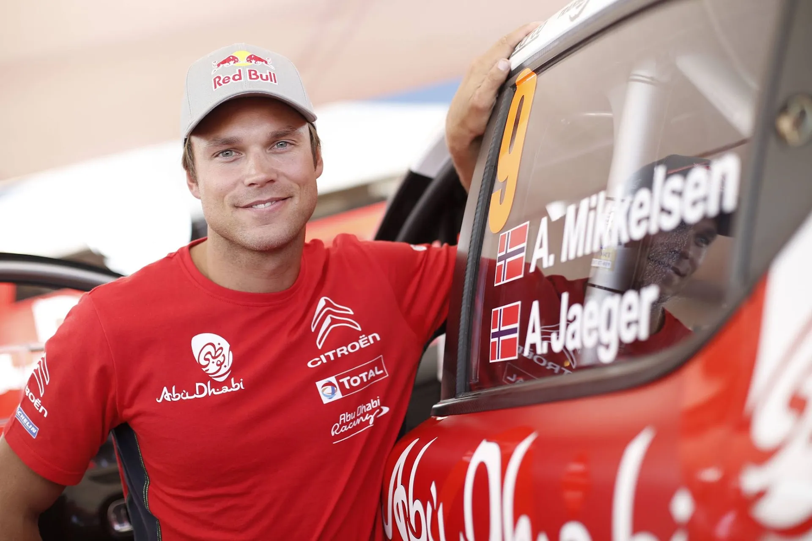
Andre Lavadinho / @World / Red Bull Content Pool
So at the mid-point of the season, here's how each driver is looking like:
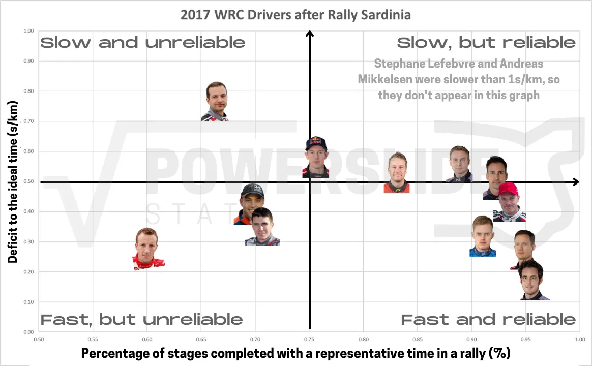
And here's a more collective look on the table below:
Thierry Neuville is both the fastest and the driver that has completed the most kilometers in 2017 thus far. I was surprised as well when looking at the data, but the Belgian’s misfortunes in Monte Carlo and Sweden were a combined 27.39km that the Belgian lost due to his mistakes. Sebastien Ogier is slightly slower and drove a bit less kilometers to the Belgian, but still finds himself in the lead of the championship.
Ott Tanak is another driver in the Fast and Reliable quadrant, with the Estonian being less reliable than his main championship rivals. Jari-Matti Latvala is more consistent, but also slower than Tanak, with Dani Sordo similarly slower than the Finn. 57% of Latvala’s non representative stages/DNFs are due to mechanical issues, which is higher than both Sordo and Tanak.
In his two rallies, Lappi is walking the line between Fast and Reliable and Slow and Reliable, as is Mads Ostberg, who is further to the left of the graph. That is solely his doing, with 84% of Ostberg’s misfortunes coming thanks to his mistakes.
Elfyn Evans is almost exactly in the middle of the graph, with an up and down season thus far. Juho Hanninen is the only driver at the Slow and Unreliable quadrant, with the Finn suffering from some mechanical issues, like in Argentina, but he had also been very crash prone in 2017.
Now, in the Fast but Unreliable quadrant, we find two Citroen drivers and one Hyundai driver.
Unsurprisingly, Kris Meeke finds himself in this spot of the graph. 84% of the Northern Irishman’s lack of running was due to his mistakes, with the other 16% being his engine failure in Corsica. On the other hand, his team mate Craig Breen suffered two gearbox failures in Argentina and Sardinia, which cost him a lot. Breen is the most “unlucky” driver thus far, with 74% of his lack of running being due to mechanical issues.
Hayden Paddon missed the entirety of the Monte Carlo Rally due to an accident on the opening stage, and the Kiwi also had mechanical issues in Sweden and Portugal, but also crashed out of Sardinia.
As for the most unreliable car thus far, the Citroen C3 WRC is by far the most unreliable at the season’s midpoint, missing out on 11% of the total mileage, with the Toyota Yaris WRC a respectable 6.8%, in the Japanese team’s return.
The i20 and Fiesta are the two most reliable cars, with the Ford being .6% better than the i20, with only 4.1% of the total mileage missed due to issues with the car.
Rally Poland saw some changes in the driver lineup, as Kris Meeke was dropped by the Citroen squad due to his excessive crashing. Mikkelsen would continue with the team, with Stephane Lefebvre and Craig Breen completing their lineup. M-Sport would run a fourth car for Teemu Suninen, with the Finn making his top class debut.
It was a close battle between Tanak, Neuville and Latvala, with the trio separated by just 6.6s at the end of Friday. Latvala would retire from the rally on Saturday due to a mechanical issue, and now the battle for the win was between Neuville and Tanak.
Heavy rain would make conditions very tricky for drivers, with Sebastien Ogier going off and damaging his Fiesta on Saturday. Tanak and Neuville would exchange the lead at multiple points during the rally. It was a very close contest, and it seemed like a matter of time before one of the two went off, and indeed, Tanak would go off and retire on SS21, letting Neuville cruise to the rally win.
Paddon would finish in 2nd, with Ogier recovering to finish 3rd.
Meeke would return in Finland, with Citroen only fielding two cars for him and Breen. The Northern Irishman would finish 8th, claiming he was rusty from his time off the car.
After winning in Poland, Neuville was very close to the championship leader. He would however finish a lowly 6th. Elsewhere, Ogier would crash out from the rally on Friday. Tanak would also have a miserable event, losing a lot of time due to a puncture on Day 1.
At the end of Friday, it was a Finn 1-2-3, with Jari-Matti Latvala leading ahead of his rookie teammate Esapekka Lappi, with Teemu Suninen in 3rd, in just his second rally in the top class. Unfortunately for Latvala, he would retire from the lead due to yet another mechanical failure in Ouninpohja, handing the lead to Lappi.
Paddon would endure a miserable rally, retiring twice with a broken suspension.
On Sunday, Suninen and Hanninen would duel for second place, with Elfyn Evans also close behind. Suninen would spin and lose time on SS24, effectively putting him out of the podium. Evans would edge out Hanninen for 2nd, with the Finn happy to get a maiden podium finish, at home no less. But the star of the rally was undoubtedly Esapekka Lappi, winning his first WRC event at just his fourth start with Toyota.
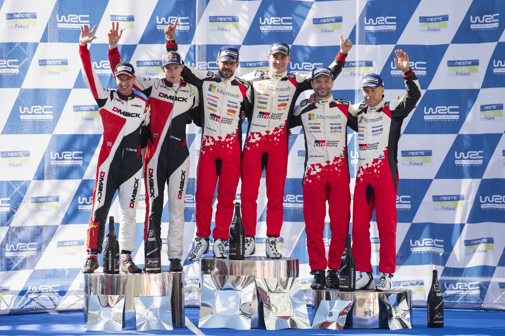
Ivo Kivistik / Red Bull Content Pool
Citroen would field three cars in Germany, with Mikkelsen returning to the team’s lineup. And it would be a great rally for the Norwegian. Mikkelsen would finish in 2nd, behind Ott Tanak’s Fiesta WRC. Meeke by contrast, would retire on the rally’s opening Super Special Stage, after hitting a concrete block and destroying his suspension.
Joint championship leaders Thierry Neuville and Sebastien Ogier were locked in a fight for 3rd place on Saturday, but Neuville would break his i20’s suspension on a cut, retiring from the rally, and handing the championship lead to Ogier.
Latvala would yet again have mechanical issues with his Yaris, this time it was his engine that had issues. He would finish, but it would be in 7th position. Hanninen would finish a nice 4th, with Lappi retiring with a broken suspension on Friday.
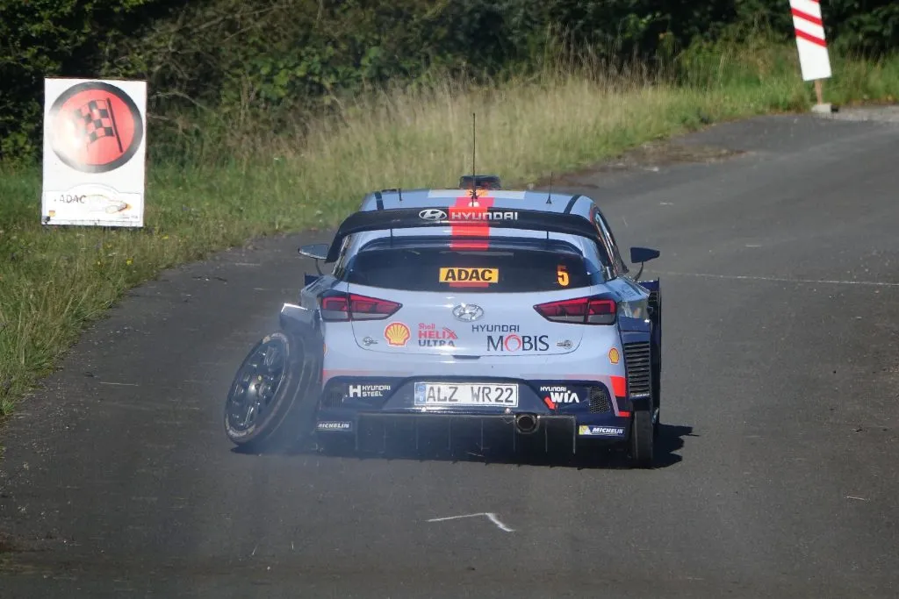
Murmurs in the Service Park noted that Meeke could be sacked by Citroen and replaced by Mikkelsen for the rest of 2017 and beyond. However, the Norwegian would switch to Hyundai for the last three rounds of the season! Meeke would continue with Citroen until the end of the season.
Catalunya would prove to be a miserable affair for the South Korean team. Mikkelsen, who was leading the rally at one point, would break his suspension on the same exact place as teammate Dani Sordo. Worse was to come, with Thierry Neuville also breaking his suspension on SS16, and leaving the rally empty handed.
Ogier would finish 2nd, a result which all but confirmed he’d be the 2017 champion. Tanak would finish just behind in 3rd, despite driving with a gearbox set up for gravel on Saturday afternoon. And as for the winner? Well that would be Kris Meeke!
Meeke would beat out Ogier on the tarmac leg of the rally and secure his and Citroen’s second win of the season!
Latvala would once again retire due to a fault with his Yaris, this time an oil leak.
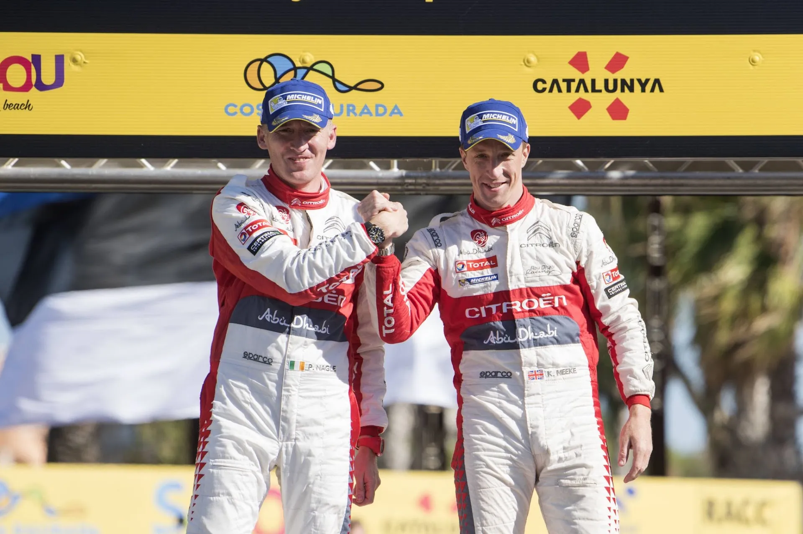
Ivo Kivistik / Red Bull Content Pool
Wales would be the decider for both titles. M-Sport would have perhaps their most cherished memory on the Power Stage, with Tanak crossing the line to secure the Constructor’s title, Ogier finishing 3rd and securing his 5th title in succession, and Elfyn Evans winning his first ever rally in the WRC, at home no less.
Neuville’s 2nd place finish was not enough to take the championship fight to the finale in Australia. Mikkelsen would finish in 4th, and Paddon would finish in 8th, after hydraulics problems on Saturday.
Latvala would finish a rally for a change, but would be 5th, struggling with the car throughout the event. Lappi would also struggle, finishing 9th, but at least he’d finish, unlike Hanninen who retired on SS14 after hitting a tree. That would be his last outing with the team until his one off in Sardinia in 2019.
Meeke would be the highest placed Citroen in 7th, criticizing the team’s choice to not test before the event. Breen would get stuck in a ditch and retire on Friday’s last stage.
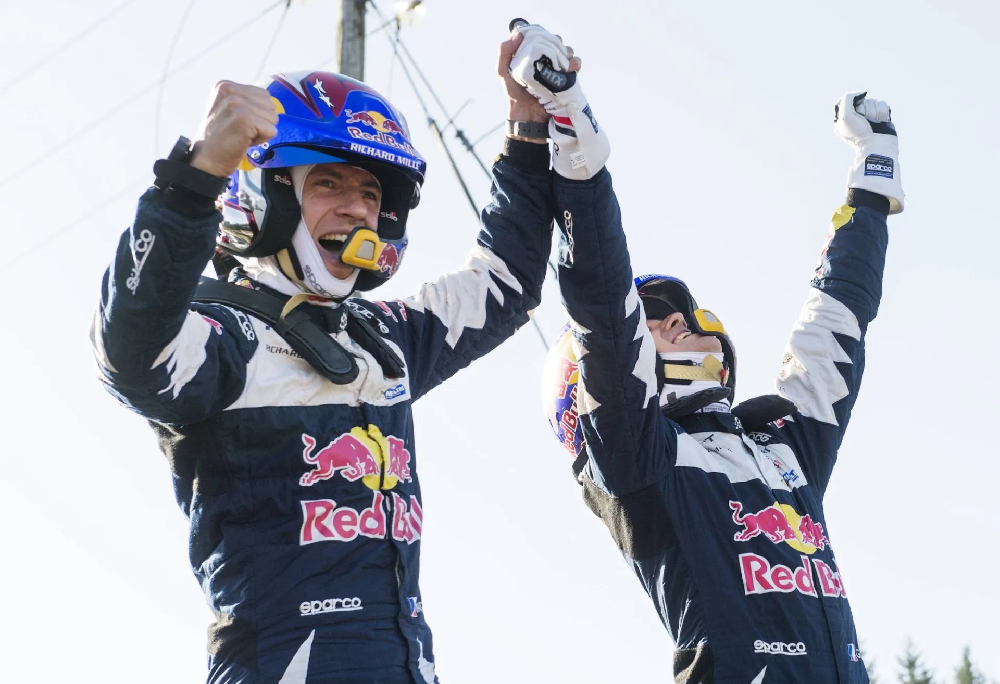
Ivo Kivistik / Red Bull Content Pool
Australia would be the season finale. With all titles decided, not much was at play.
Mikkelsen would lead the rally and by the end of Friday he would have a 20s lead over teammate Neuville. Unfortunately, the Norwegian would retire after hitting a bank and puncturing two tyres. Neuville would inherit the lead, and would not look back, despite some opposition from Latvala.
Meeke would break his suspension on SS12 from third place. Ogier who suffered gearbox issues on Friday and Sunday would finish 4th. Latvala would crash out of the rally in the Power Stage, elevating Tanak to 2nd, and Paddon to 3rd.
So here's how everyone looked at the finish of the 2017 season:
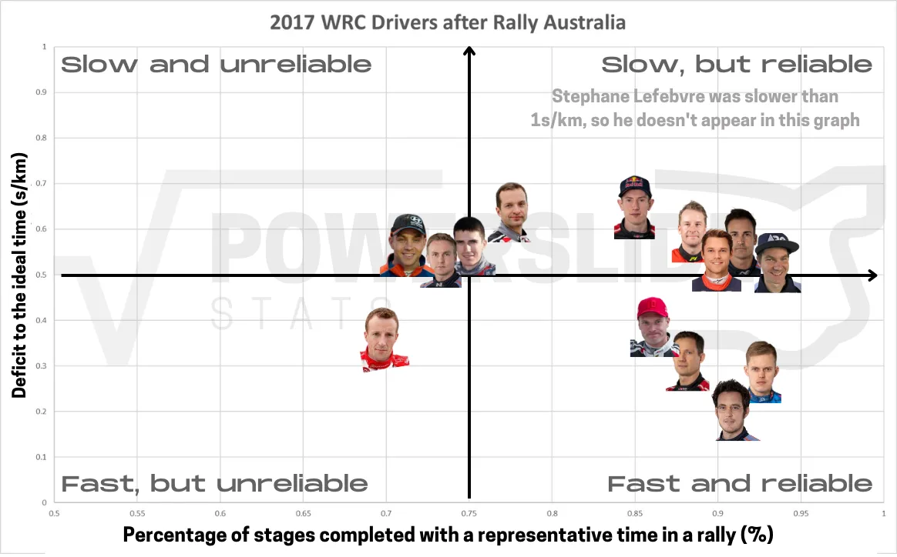
And here's a more collective look on the table below:
Thierry Neuville finishes the 2017 season as the fastest driver but without a title to show for it. Sebastien Ogier is actually both slower and completed less kilometers across the season than his Belgian rival. This is only because he missed almost the entirety of Rally Finland after his crash. Neuville would Super Rally after each of his DNFs, whereas Ogier did not in Finland. Had he Super Rallied, Ogier would be the most consistent driver in 2017 compared to his rivals.
Ott Tanak was also slightly faster than Ogier. This was Tanak's break out year, and the Estonian was actually the fastest driver from Rally Argentina to Rally Australia.
Jari-Matti Latvala is another driver in the "Fast and Reliable" quadrant. He suffered a miserable second half of the season, retiring in four rallies in a row due issues with his Yaris WRC.
Mikkelsen, Suninen, Sordo and Ostberg are all close to each other, on the fringes of the "Slow but Reliable" quadrant. Mikkelsen did not have that great of a stint with Citroen apart from his 2nd place finish in Germany, but his pace improved when he switched to Hyundai. Sordo was just typical Sordo, being consistently there to pick up points for his team. He did make some mistakes on the second half of the season though, crashing in Germany and breaking his suspension in Catalunya.
Elfyn Evans finds himself further left in the quadrant. Evans became more reliable, as he also didn't suffer many issues with his car at the second half of the season, but also slightly slower. Argentina and Wales were great performances, but they were really just outliers, he wasn't that fast throughout the year. Hanninen's second half was better, and the Finn improved massively after Poland (0.85s/km compared to 0.45s/km). But he still made mistakes, like the crash he had in Wales.
Craig Breen became slower at the second half of the season, but also more reliable. He was still plagued by car problems, but also had offs in the last two events of the season.
Kris Meeke was faster than his teammate, but way less reliable. Meeke missed out on 850km of stages due to his own driver errors. It was a disaster of a season, but he still managed to win two events.
As for Lappi and Paddon, they find themselves on the fringes of Slow and Unreliable. Lappi won in Finland, but crashed in Poland, Germany and Catalunya, which hurt his ranking. As for Paddon, he had a bad season. The Kiwi missed out almost all of Finland and the whole of Monte Carlo rallies due to his mistakes, but also suffered issues with his i20, more often than not with the car's power steering.
If you made it this far, thank you for reading! If you want more stats from the 2017 season like surface stats, how many punctures there were, what car was the least reliable and more, you can check out the Powerslide Patreon.